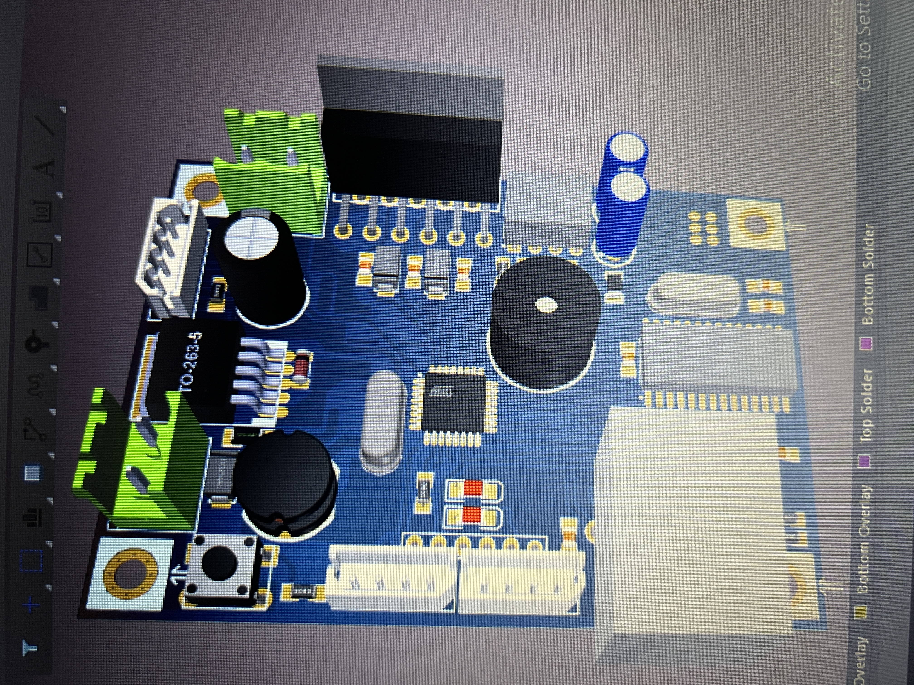
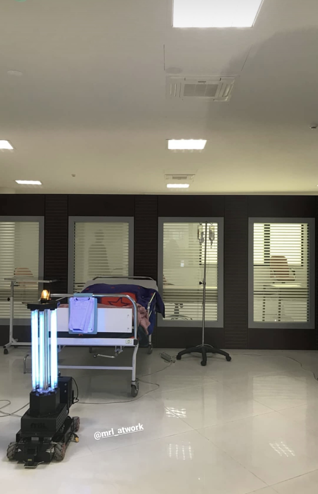
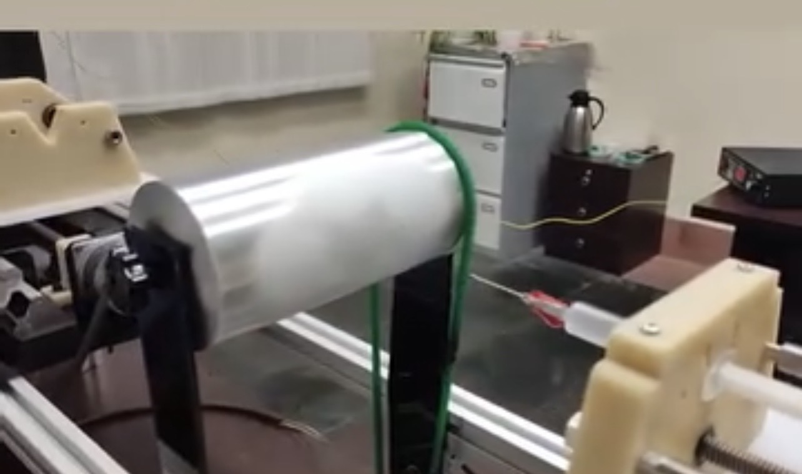
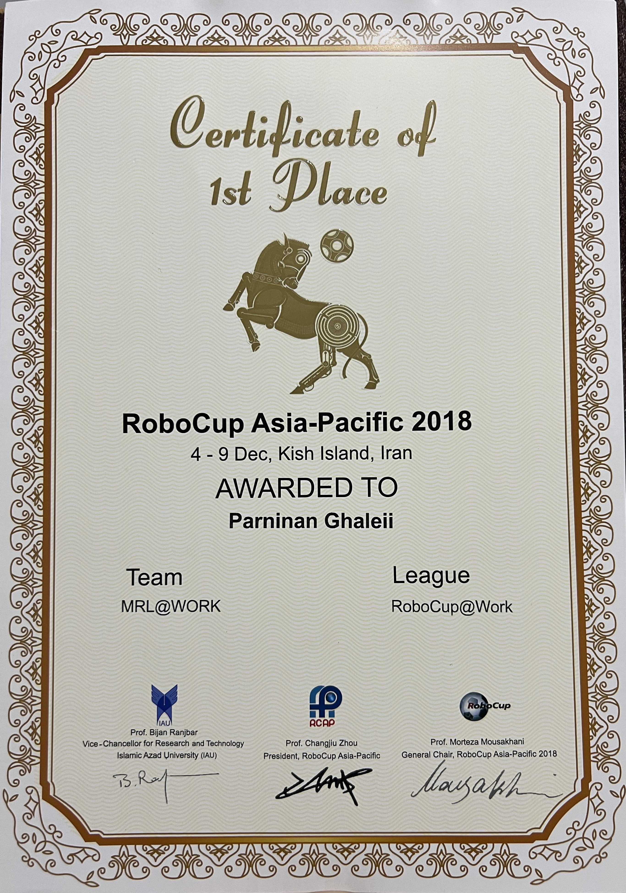
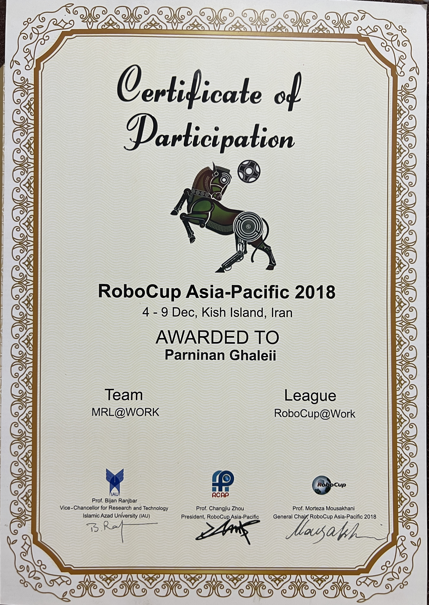
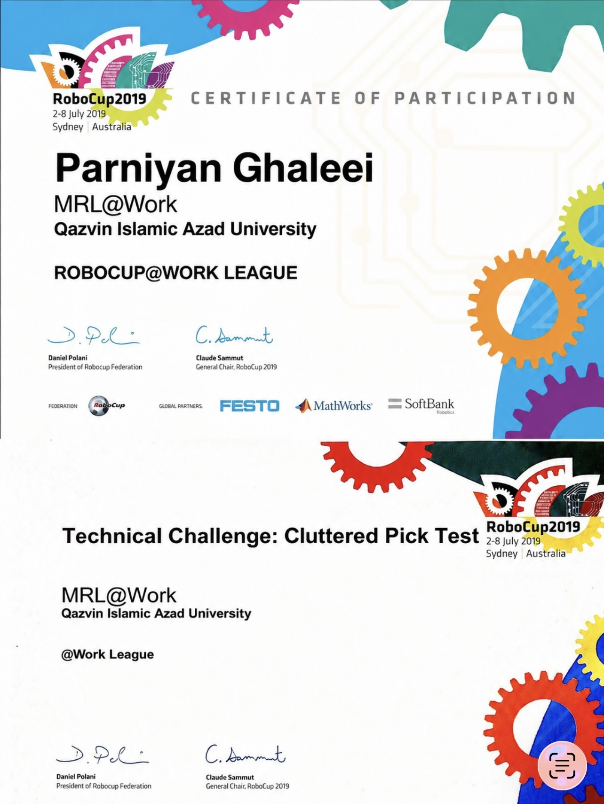

PCB Design
Schematic design, component selection, multilayer PCB layout, routing and manufacturing preparation.
Electronics & Embedded Systems Engineer focused on PCB design, microcontrollers, hardware development and practical R&D.
I am an Electronics & Embedded Systems Engineer passionate about designing practical and reliable hardware systems.
My experience includes PCB design, embedded systems, microcontrollers, electronics development, robotics and hardware R&D.
I enjoy working from the initial schematic and component selection through PCB development, prototyping, testing and final implementation.
Schematic design, component selection, multilayer PCB layout, routing and manufacturing preparation.
Microcontroller-based systems, sensors, drivers, peripherals and hardware control.
Embedded communication and hardware interfaces used for reliable system integration.
Prototyping, troubleshooting, testing and developing practical electronics solutions.
Electronics hardware development, troubleshooting and technical implementation in a professional engineering environment.
Worked on robotics projects involving electronics, embedded systems, hardware development and team-based engineering.
A selection of electronics, PCB, embedded and robotics projects.


Designed and developed the complete hardware board for the Robot at Work robotic platform. The system was built around an ATmega32 microcontroller and L6203 motor driver to control EMG49 motors with integrated encoder feedback.
I was responsible for the complete hardware development process, including circuit and schematic design, component selection, PCB design, board assembly, testing and debugging. The board also included a LAN interface for communication with the robot's software and control system.
Encoder feedback was handled directly by the control board, allowing the system to monitor motor movement. The final board was fully fabricated, tested and successfully deployed on the robot.


Designed and developed the control electronics for an automated hand sanitizing device that dispensed alcohol when a hand was detected.
The system was based on an ATmega32 microcontroller and a 38 kHz infrared detection system. The IR transmitter and receiver were used to detect the presence of a hand while reducing false triggering caused by ambient light and direct sunlight.
My work covered the hardware design and implementation of the control board, including circuit development, component selection, PCB design, assembly and hardware testing.


Designed and developed the main control board for a home steam-generating appliance. The system integrated multiple hardware subsystems into a single control platform.
The board included an ARM microcontroller, water-level sensing, a solenoid valve for water control, a piezoelectric steam-generation element, a mode selector, RGB status indicators and a fan.
I handled the complete hardware development process, from circuit design and component selection to PCB design, assembly and testing. Particular attention was given to cost-effective component selection and practical hardware implementation.


During the COVID-19 pandemic, our existing robotic platform was adapted and redesigned for automated disinfection applications using UV light.
I contributed to both the electronic and physical development of the system, adapting the existing robotic platform to accommodate the new disinfection function.
My work included hardware development, system modification, assembly and testing. The project combined robotics, electronics, embedded systems and practical mechanical integration.

Developed the embedded control system for an automated motion and dispensing device. The system used an AVR microcontroller to control multiple stepper motors responsible for movement along horizontal and vertical axes.
The mechanism incorporated two moving platforms and a motorized syringe system capable of dispensing a specified volume. I was responsible for the embedded programming and motor-control logic required to coordinate the system's movements and dispensing operation.
The project involved practical implementation of stepper motor control, multi-axis motion coordination and automated dispensing within an embedded system.
Robotics became an important part of my engineering journey, combining electronics, embedded systems and real-world problem solving.


RoboCup Asia-Pacific
RoboCup — Sydney
Collaboration, experimentation and engineering teamwork were a major part of my robotics experience.


Qazvin Islamic Azad University


